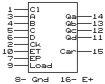

ИЕ9 = (160) - двоично-десятичный синхронный счетчик. Условное графическое обозначение
Счетчики представляют из себя двоично-десятичный и двоичный каскадируемые синхронные счетчики с возможностью запрещения счета. ИЕ9 и ИЕ10 имеют асинхронный сброс и синхронную начальную загрузку. ИЕ11 и ИЕ18 имеют синхронную начальную загрузку и сброс.
Load
производится потенциалом L и по фронту Cк ↑
Cl
производится потенциалом L для ИЕ9 и ИЕ10
Cl
производится потенциалом L по фронту Cк ↑ для ИЕ11,ИЕ18
Cк
активный фронт ↑
Carry
положительный импульс длительностью в период тактовой частоты (9/15-е состояние счетчика)
E.P
входы разрешения. Для счета на оба эти входа подается
E.T
уровень "H". Для организации синхронного счетчика большой разрядности, на E.T подать "Carry" предыдущего счетчика